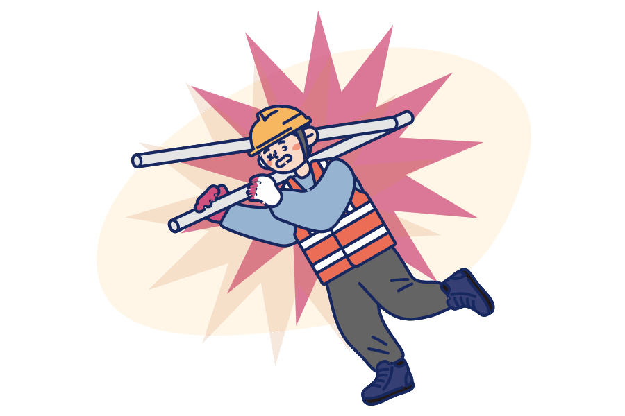

아닙니다.
자전거 보험 외에도 다양한 지자체 보험이 있습니다.
지자체 보험은 각종 재난/사고로부터 피해를 본 국민의 생활 안정 지원을 위해 지자체가 가입한 보험입니다.
행정구역에 따라 시민, 도민, 구민, 군민 안전 보험 등으로 명명되고 있습니다.

아닙니다.
지자체에 주소를 두고 있는 시민은 별도 절차 없이 자동으로 보험 혜택을 받을 수 있습니다.
단, 지자체에 따라 가입 여부, 종류, 가입 금액이 다를 수 있습니다.
3
주소지에서 발생한 사고에 대해서만
보장받을 수 있나요?
아닙니다.
사고 발생지역 상관없이 주소지 지자체 보험에서 보장하는 사고를 당하면 보장받을 수 있습니다.
네.
직전 거주지의 보장은 더 이상 받을 수 없습니다.
하지만 이사 간 지자체가 가입된 보험이 있다면, 그곳에서 보장이 가능합니다.
그리고 거주하는 기간 발생한 사고라면, 사고 사실을 안 날로부터 3년까지는 보험금 청구가 가능하다는 점도 기억해 두시면 좋습니다.
5
내 보험에서 보장받아도
중복해서 받을 수 있나요?
네.
개인이 가입한 보험의 보장과 중복보장이 가능합니다.
그리고 거주하는 기간 발생한 사고라면, 사고 사실을 안 날로부터 3년까지는 보험금 청구가 가능하다는 점도 기억해 두시면 좋습니다.
네.
지자체 홈페이지나 국민재난안전포털
(www. safekorea.go.kr → 정책보험)에서도 전국의
시민안전보험 정보를 확인할 수 있습니다.
카카오톡 서비스 중 카카오페이의 동네무료보험 메뉴에서도 확인할 수 있습니다.